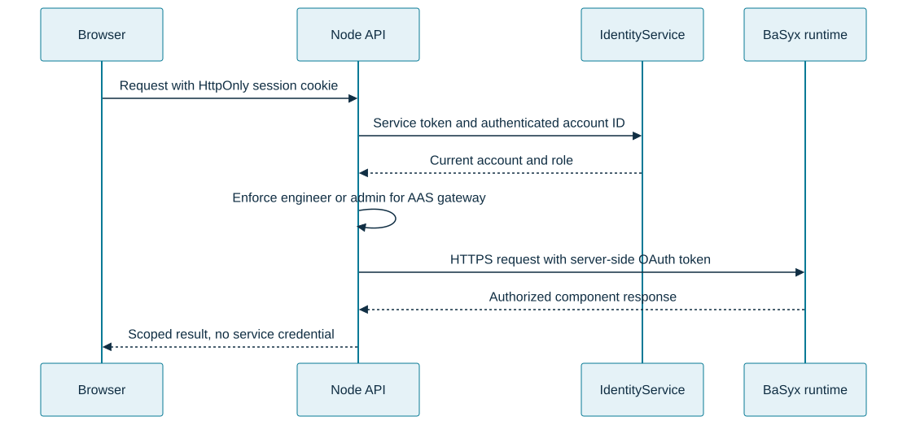

Smart Factory IoT System Diagrams
These visual flows show application, factory edge, service identity, and persistence boundaries. They complement the detailed architecture and API references.
Related guides
Source review: 21 October 2026.
1. Current runtime

API and worker roles share one reviewed backend image on Oracle. The six BaSyx services retain their own configuration and data boundary. Render is a historical hosting path; it is not the current production tier.
2. Durable telemetry

WROVER and serial controllers stay behind the Pi. Eligible native MQTT devices can use a direct path with individual credentials. A transient Redis notification is not a durable telemetry record. Publication acknowledgement and application persistence are separate checkpoints.
3. Identity and AAS access

Application identity and AAS service identity are distinct. Service credentials never grant a browser role. Form-managed AAS changes go through the versioned application workflow so direct standards writes cannot bypass revision history.
4. Asset configuration and acknowledgement

QoS 1 publication does not establish that a gateway applied the profile. A configuration acknowledgement does not establish firmware installation or physical movement. Equipment controls require commissioned protocol adapters and remain separate from protective safety functions.
5. Incidents and durable notifications

Connectivity loss alone does not start production downtime. Notification read state and incident acknowledgement are separate. Provider acceptance is not proof of mailbox delivery.
6. Release flow

See the visual deployment guide for configuration, rollout, and rollback. Backend updates are currently manual; the frontend workflow waits for matching source CI.